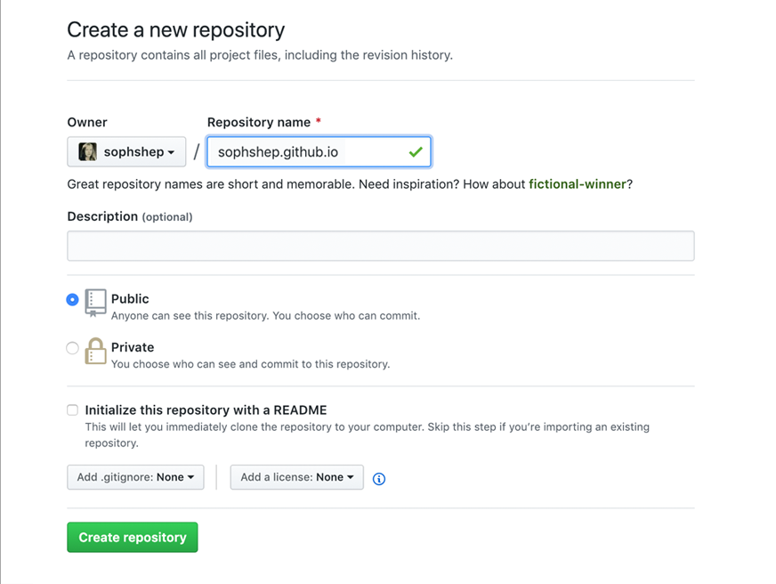

Ready to get started? Build your own site from scratch or generate one for your project.
You get one site per GitHub account and organization,
and
unlimited project sites. Let‘s get started.
1. Create a repository
Head over to GitHub and create a new public repository named username.github.io, where username is your username (or organization name) on GitHub.
If the first part of the repository doesn’t exactly match your username, it won’t work, so make sure to get it right.

2. What git client are you using?
3. Clone the repository
$ git clone https://github.com/username/username.github.io
$ git clone https://github.com/username/username.github.io4. Hello World
Enter the project folder and add an index.html file:
$ cd username.github.io
$ echo "Hello World" > index.html
5. Push it
Add, commit, and push your changes:
$ git add --all
$ git commit -m "Initial commit"
$ git push -u origin main